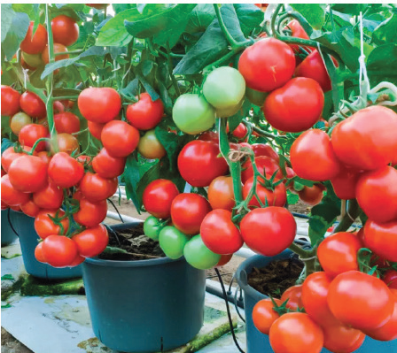
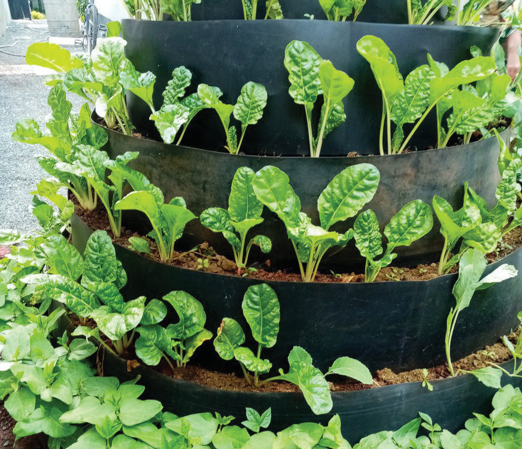
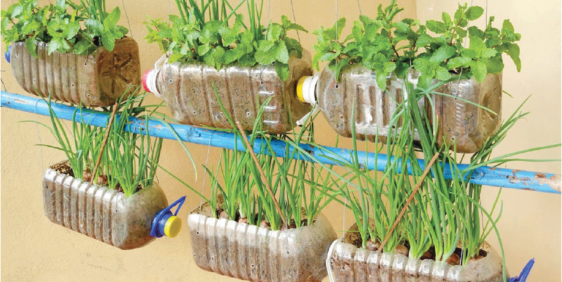

Source:
https://m.media-amazon.com/images/I/81OvYLqaucL._AC_SL1500_.jpg

Exercise 3.1
Which seedbeds in Figures 3.71 to 3.75 are best for growing vegetable crops at your school and home?
Why?
Types of horticultural farming
Horticultural farming can be grouped in various ways. It can be grouped according to where it is practised. On this basis, there is home gardening (taking place at home) and field horticulture (taking place in fields which may be near or far away from home). Horticultural farming can also be grouped according to purpose. In this regard, there are subsistence and commercial horticultural farming.
Subsistence horticultural farming involves producing horticultural crops at

AGRICULTURE FORM ONE.indd 44
9/17/25 12:09 PM